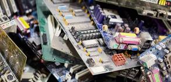

Reduciendo el impacto ambiental a través del reciclaje tecnológico
El crecimiento acelerado de la tecnología ha generado un aumento en los residuos electrónicos, afectando el medio ambiente. La falta de conciencia y opciones accesibles de reciclaje agravan esta problemática.
Desarrollar una plataforma digital que conecte a usuarios con centros de reciclaje certificados, facilitando la recolección y correcta disposición de dispositivos electrónicos en desuso.
Implementar esta solución traería ventajas significativas: